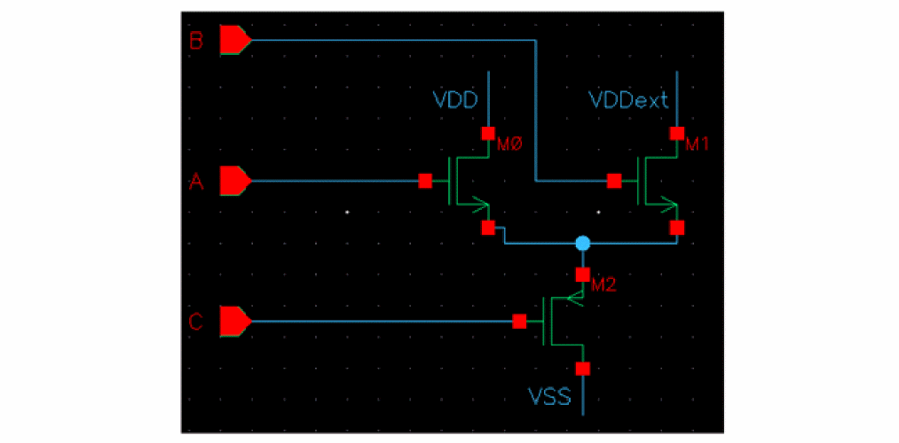
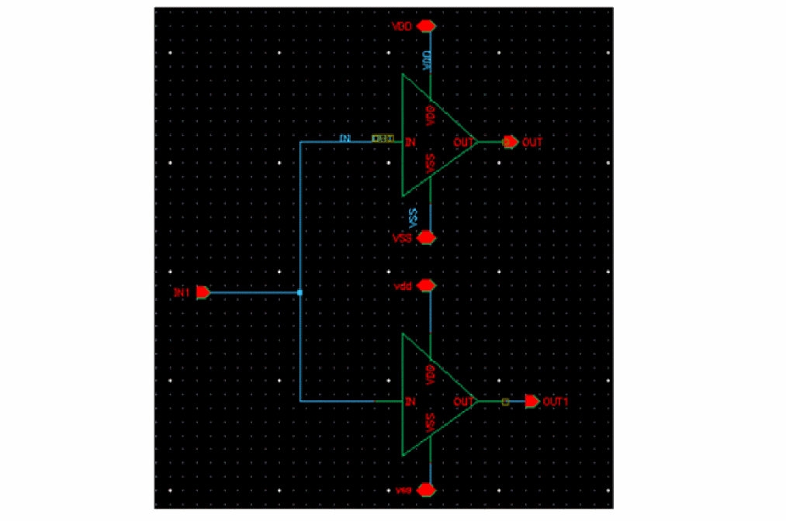
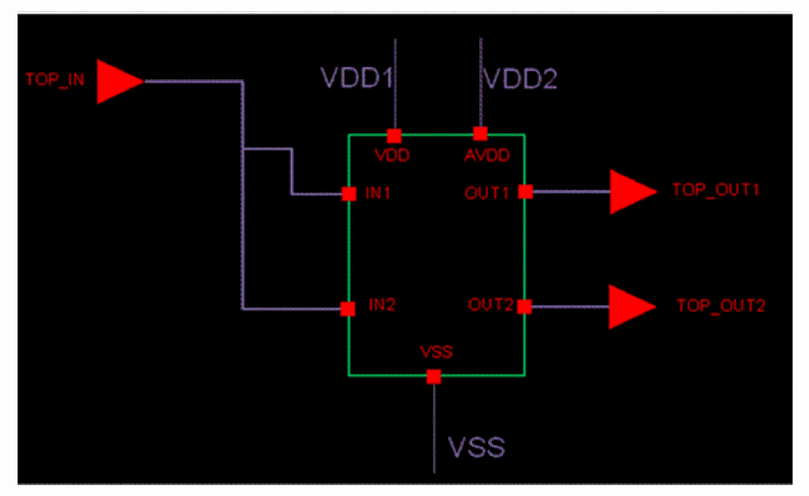
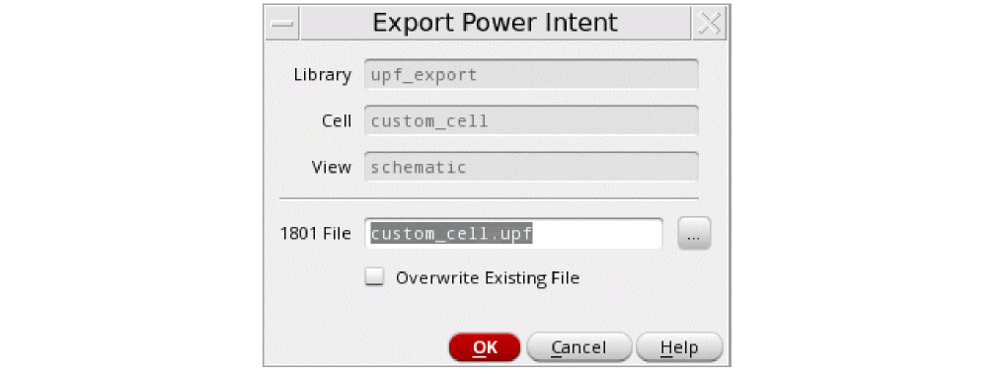
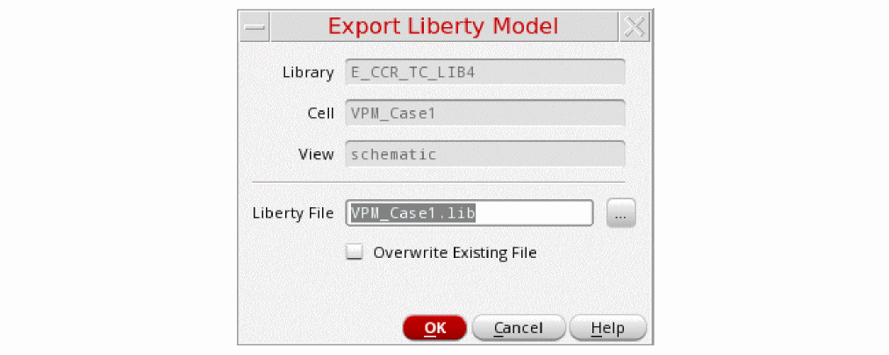

6
Exporting Power Intent of a Design
The power intent of the design specified in the 1801 file acts as a design source along with the logical intent (synthesized Verilog netlist). This collection of source input files is utilized by different tools, including the formal verification tools. The 1801 information is expected to successively refine at various design stages, one of which is the case where the design information changes (ECO). Here, a 1801 file incorporating all the design changes is required to be regenerated to have a logical equivalence with the updated design schematic.
The export flow enables you to extract the design connectivity from the schematic and export the low power design intent to a 1801 file. This helps in adding the updated content in incremental stages of IP authoring, which can finally be verified for correctness using CLP along with a VerilogPG netlist.
The chapter includes the following sections:
- Export Flow
- Extracting the Power Intent from a Design
- Exporting 1801 Design Model
- Exporting 1801 Power Model
- Exporting Liberty Power Model
Export Flow
The illustration below gives an overview of the export flow.
Here are the key stages of the export flow.
- Extraction of design
- Creation and export of Design Model of the design
- Creation and export of Power Model of the design
- Creation and export of Liberty Macro Model of the design
Extracting the Power Intent from a Design
If your design includes objects that describe the power intent for the design, you can extract the power intent, which can further be exported to a 1801 file, to be used further in design flow.
To extract power intent from a design:
- Open the design in Power Manager.
- Prepare the setup for automatic extraction. For more details about how to prepare the setup, refer to Specifying the Setup. Load the setup from Power Manager toolbar or menu.
-
On the Power Manager toolbar or menu, click Extract from Design.
The Extract Power Intent form appears.
The library, cell, and view name list of the currently open cellview are shown in the form. The fields specify the information of the cellview, which is non-editable, being extracted.
For a pure schematic-based design, Power Manager always extracts a flat (design model, power model, or macro model) 1801. If there are hierarchical blocks in the design that have their own associated 1801 file, the tool does not extract details of that block and generates a hierarchical 1801, instead by integrating the 1801 file of the lower-level blocks. During the extraction of design schematic the following steps are performed:
Identification of Design Objects
The design extraction involves the identification of the essential design objects, which are required for building a correct power intent. These include:
- Identification of power and ground nets associated with each cell in the design hierarchy by using the name-based registration in the setup file.
- Identification of the standard and special cells that have associated Liberty models or a 1801 special cell definition file at the path specified in the setup. When found, the tool identifies the cells defined in the 1801 file as standard or special cells.
For details, refer to Specifying the Setup.
Partitioning of the Design
A design can contain different types of cells. For example, the following example design contains various types of blocks.
During extraction, the extractor handles each type of cell differently. For example, if a cell is already bound with a 1801 file that was previously imported in the schematic of the cell, the extractor refers to the1801file instead of re-extracting the power information of the cellview.
Similarly, for all multi-supply cells that contain primitive cell instances that were identified during the partitioning stage, the extractor extracts the cellview-level power domain information and stitches it to the top-level domains. Instances of single supply cells are considered as standard cells and their power attributes are derived from their corresponding Liberty model and stitched to the top-level power domains. Therefore, before extracting power intent, the tool needs to identify different types of cells and blocks in the design.
During partitioning, the Schematic Editor traverses through the design and identifies the following types of cells:
| Cell Type | Description |
|---|---|
|
A cell that contains the existing 1801 model. The power intent that has been imported by using the File – Import Power Intent command is being applied to this cell. For more details on importing power intent, refer to Importing the Power Intent of a Design. |
|
|
A cell that meets any one of the following criteria:
|
|
After the design partitioning, the next step is the design elaboration. The design elaboration involves the creation of an Embedded Module Hierarchy (EMH), which is a model for storing the hierarchical design data supported at the open access database level. For Power Manager, this open access cellview is called the power view. For details about the power view, refer to Power View. The extractor traverses the entire schematic hierarchy to achieve the following:
- Builds a data structure that contains the OA equivalent objects from the database objects encountered. The structure includes a top-level design, instances, nets, terms, instTerms and net connectivity.
- Utilizes all the instances of the cells that have Liberty models, associated power views, and associated 1801 model.
- Extracts power intent by tracing the connectivity. The connectivity tracing is done considering the block domain of open access cellview, that is, the flat representation of the entire schematic hierarchy in EMH.
- Identifies power nets and ground nets and their equivalent power or ground nets by the sigType in the schematic or the name-based registration in the setup.
- Identifies switchable or non-switchable power nets or ground nets. This is the output from switch supply pin of switch cell instances (Power Switch).
- Pairs the power nets and ground nets. PG net pairing is done by looking at the related PG pins of standard cell instances, special cell instances, macro cell instances. In addition, pairing is also done by tracing a path between the top-block power and ground nets through the source-drain terminals of transistors, shorts, and connector devices in the top block.
- Models various states where every single supply each state is assigned a specific voltage or the state of supply sets, that is, collection of supplies instead of individual supplies by using PST for exporting design and power models.
- Assigns instances to the power domains.
- Creates power states and the power modes. Also, assigns power domains to these power modes.
-
Identifies boundary ports and assigns these ports to the power domains. This identification is done based on tracing the connectivity through transistors and two terminal devices. Related power and ground nets of ports are derived by analyzing the related supplies of the driver or receiver instTerms in the top block. While identifying ports for creating power domains, it is checked whether the port could be related to more than one power domain by virtue of its connections to one or more instances that may belong to multiple power domains. In such a situation, the port is not associated with any power domain and the warning messages are issued depending on the situation. There are three scenarios where the ports are not related to any of the power domains due to ambiguity in deciding the power domain:
Case 1: In this scenario, port C can be related to either of the two supply sets (SS__VDD__VSSandSS__VDDext__VSS) due to its connectivity toM2, which falls in the path ofVDD,VSSas well asExtVDD,VSS. Therefore, port C is not related to any supply set because there is ambiguity related to its power domain.
Case 2: In this scenario, the port IN1 is driving two inverter instances that belong to different supply sets and so it can be assigned either toSS__VDD__VSSorSS__vdd__vss. Therefore, port IN1 is not related to any supply set because there is ambiguity related to its power domain.
Case 3: In this scenario, the portTOP_INdrives two pins,IN1andIN2, of a hierarchical instance. Inside the instances (not shown in the image),IN1andIN2are separately driving two inverters, which are in two separate supply setsSS__VDD1__VSSandSS__VDD2__VSS, respectively. The portTOP_INcan be assigned eitherSS__VDD1__VSSorSS__VDD2__VSS, therefore, it is not related to any supply set due to ambiguity in its power domain.

In such scenarios, you can provide the information of data ports to explicitly specify their supply set, forcing the tool to associate the data ports to the desired power domain. For details on how to register this information, refer to Supply Set and Power Domain Registration.
While extracting power intent, Power Manager gives precedence to the explicit registration of the port attributes and traces connectivity through transistors and the two-terminal devices. Each data terminal that can be traced to a power terminal is created as a boundary port for the corresponding power domain. If a data terminal is connected to more than one power terminal, it is attached to the power domain as specified in the port attribute registered in the setup for that data terminal. If the port attribute is not registered in the setup, the tool would associate the data terminal to all possible power domains found by connectivity tracing.
\w *WARNING* (LP-3034): Could not determine driver/receiver supplies for logic port 'enps_3v3_i, dll_amux_ao, dll_ibias_10u_ai' in the Liberty or setup files. Ensure that the required supplies are defined in the files.
- Derives domain shutoff conditions by backtracing the enable pins of switch cell instances in the top block to the top block ports and combining those ports in suitable expression as per the design.
-
Integrates sub blocks that have their own 1801files.
- If the 1801 block has a power intent specified as a Liberty macro model, it identifies the top-level domain that maps to the macro-level domain and creates a domain mapping. PG net voltages in macro cells are assigned from the top net voltages. This might lead to a conflict if the net voltage specified in the macro model are of different voltage levels as compared to the voltage levels of the top net voltage. This conflict can be noted at the verification stage of the power intent.
- If the 1801 block has power intent of the design model type, Power Manager collates all the power domains in the 1801 block hierarchy and integrates the 1801 cell in the same way as for a block with the macro model type.
For more details about how to import an existing 1801 file for a sub block, refer to Importing the Power Intent of a Design. - Identifies low power special cells and creates power switch rules, isolation rules, and level shifter rules, as required. Enable conditions are derived by backtracing the enable pins of special cells.
Creation of Power Domains
While extracting power intent, Power Manager automatically identifies the power nets and ground nets in the design as described below. Further, for each power net, it finds the ground net associated with it and for each unique pair of power net and ground net, creates a power domain.
Identifying Switchable and Non-Switchable Power Nets and Ground Nets
- A net is identified as a non-switchable power net if either of the following conditions are met:
- A net is identified as a switchable power net if either of the following conditions are met:
- A net is identified as a non-switchable ground net if:
- A net is identified as a switchable ground net if either of the following conditions are met:
After identifying the power nets and ground nets, the unique power net/ground net pairs (Supply sets) are identified. For this, the tool traces the paths from a power net to a ground net. The tool also considers the power net/ground net pairs registered in the setup.
Supply sets can be defined in the setup for the following scenarios.
- The primary supply set for the power domains mentioned in the setup.
- The power and ground nets that cannot be paired by traversing the design hierarchy or parsing the Liberty in case of a Liberty cell.
Supply set identification can be done explicitly in a setup template or by automatic identification.
If you want to partition the design for assigning a particular instance to some power domain, provide the list of domain, instances, and primary supply set. For more information refer to Supply Set and Power Domain Registration.
If power domains and supply set information is provided in the setup, the following is the sequence of tasks being done:
-
create_power_domaincommands are created in the exported 1801 file based on the number of power domains. - Primary supply set are referred from the setup.
- Extra supplies that need not to be a part of setup are identified by the tool.
-
connect_supply_netcommand is generated for supply nets that are a part of extra supplies. - For any other instance that is not a part of any power domain remains in the default domain.
-
If there is no power domain assignment, a single power domain is created and all the instances are connected by using
connect_supply_net.
The following examples show how power domains are created:
Consider the following design that does not have the user-defined supply sets and power domains specified in the setup:
In this case, the tool traverses though the design and creates the following power domains:
Now, consider the following design that contains a head-switch.
In this case, the tool creates one default power domain and two supply sets:
If a primitive instance has one netSet property each for a power and ground supply, it is added to the power domain created for that power and ground supply pair even if the instance does not have any power/ground pins in the symbol/schematic view. If a power domain does not exist for that power and ground supply pair, a new power domain is created and the primitive instance is added to it. However, if the primitive instance has more than one netSet property for power or ground, it does not contribute towards the creation of a power domain and a warning message is displayed in the power intent extraction log.
Power View
Power view is an OA view generated corresponding to each cell that is being extracted to export the power intent. The power view stores the following information:
- Set up information of the cellview prior to extraction
- Extracted and/or imported power intent information
- The design information derived from the schematic design (EMH and native OA objects)
- Internal data structures
The power view is co-managed with the schematic view of the design. The view is automatically updated upon extraction when the setup or design changes. There is no need to explicitly load the setup for each successive extraction run until the power view exists for a cell and there is no change in the setup information of the design. The power view by default gets created in the design library within the design cell, adjacent to the design view/schematic. If the parent library is non-editable, lpDBGlobalSearchLibs and lpDBGlobalSearchViews can be used to save the power view in an editable user-defined library. The power view is also automatically purged when the associated schematic cellview is purged for reasons, such as on closing the schematic or calling the dbPurge/dbClose SKILL function.
Exporting 1801 Design Model
You can export the power intent specified for your design to a 1801 design model file. To export power intent from a design:
- Open the design in Power Manager.
- Prepare the setup for automatic extraction. For more details about how to prepare the setup, refer to Setup Preparation for Automatic Extraction of Power Intent. Load the setup from Power Manager toolbar/menu.
- Click Power Manager – Extract from Design.
-
Click Power Manager – Export from Design.
The Export Power Intent form appears.

The library, cell, and view names of the cell that is currently open are displayed by default in the form. In the 1801 File field, specify the path and the name of file for exporting the power intent and click OK. Select the Overwrite Existing File check box to overwrite the file.
The vpmExportPowerIntent SKILL function has been provided to export the 1801 Design Model information for a cellview.
In 1801 design model, the power intent of the sub-blocks is exported along with power intent of the top design. For a pure schematic-based design, the Power Manager always extracts a flat 1801.
An example of an exported 1801 design model file is shown below:
set_design_attributes -attribute top_ports_have_anon_supply 0
##### Supply Ports (Section 1)###################################################
create_supply_port VDD -direction inout
create_supply_port VDDA -direction inout
create_supply_port VDDSW -direction inout
create_supply_port VSS -direction inout
##### Supply Nets (Section 2)####################################################
create_supply_net VDD -resolve parallel
create_supply_net VDDA -resolve parallel
create_supply_net VDDSW -resolve parallel
create_supply_net VSS -resolve parallel
##### Supply Net Connections (Section 3)##########################################
connect_supply_net VDD -ports { VDD }
connect_supply_net VDDA -ports { VDDA }
connect_supply_net VDDSW -ports { I3/I0/VDD }
connect_supply_net VSS -ports { VSS }
##### Supply Sets (Section 4)####################################################
create_supply_set SS_VDDA_VSS -function { power VDDA } -function { ground VSS }
create_supply_set SS_VDDSW_VSS -function { power VDDSW } -function { ground VSS }
create_supply_set SS_VDD_VSS -function { power VDD } -function { ground VSS }
##### Power Domains (Section 5)##################################################
create_power_domain PD_TOP -include_scope -supply { primary SS_VDD_VSS } \
-supply { extra_supplies_1 SS_VDDSW_VSS }
create_power_domain PD_LS -elements { I0 } -supply { primary SS_VDDA_VSS } \
-supply { extra_supplies_1 SS_VDD_VSS }
###### Standard Cells (Section 6)#############################################
connect_supply_net VDD -ports { I0/I20/I0/VDD }
connect_supply_net VDDSW -ports { I3/I1/VDD }
###### Special Cells ###################################
connect_supply_net VDD -ports { I0/I22/ExtVDD }
connect_supply_net VDDSW -ports { I3/I0/VDD }
###### Macro Cells ####################################
connect_supply_net VDD -ports { I2/VDD_ext }
connect_supply_net VSS -ports { I2/VSS_ext }
##### Port Attributes (Section 7)############################################
set_port_attributes -port en_iso -receiver_supply SS_VDD_VSS
set_port_attributes -port in1 -receiver_supply SS_VDD_VSS
######### Isolation Rules #####################################
set_isolation PD_TOP_ISO_0 -domain PD_TOP -elements { out_iso } -isolation_supply_set SS_VDD_VSS -isolation_signal en_iso -isolation_sense high -location self -clamp_value 0
######### Level Shifter Rules (Section 8)############
set_level_shifter PD_LS_ls_0 -domain PD_LS -elements {I0/out_ls } -input_supply_set SS_VDDA_VSS \ -output_supply_set SS_VDD_VSS -location self -rule both
##### Switch Rules ##################
create_power_switch I3_I0 -output_supply_port { VDD VDDSW } -input_supply_port { ExtVDD VDD } \
-control_port { PSO psw_en } -on_state { on ExtVDD {!PSO} } -off_state { off PSO } -domain PD_TOP
##### Supply Port States (Section 9) ###########################################
add_port_state I3/I0/VDD -state { V110 1.1 } -state { OFF off }
add_port_state VDD -state { V110 1.1 } -state { OFF off }
add_port_state VDDA -state { V130 1.3 } -state { OFF off }
add_port_state VSS -state { OFF 0 }
##### Power State Table (Section 10) ###########################################
create_pst top_pst -supplies [list I3/I0/VDD VDD VDDA VSS ]
add_pst_state State_1 -pst top_pst -state { V110 V110 V130 OFF }
add_pst_state State_2 -pst top_pst -state { OFF V110 V130 OFF }
add_pst_state State_3 -pst top_pst -state { OFF OFF OFF OFF }
The following points explain the different sections of the exported 1801 design model:
-
Section1: The
create_supply_portcommand defines a supply port in the scope of the power domain. These are created for all the top-level supply ports identified. -
Section2: The
create_supply_netcommand creates a supply net in the scope of the power domain. These are created for all the top-level supply nets identified. -
Section3: The
connect_supply_netcommand connects a supply net to the specified ports. These commands are for handling the interface connectivity. The commands are for both the top level as well as for hierarchical interface connectivity. This resolves the connectivity of PG nets from down the hierarchy to the top level PG nets for different blocks. Section6 also performs the same task. -
Section4: The
create_supply_setcommand creates the supply set name within the current scope. This defines the primary and extra supply sets or available supplies associated with the different power domains. -
Section5: The
create_power_domaincommand defines a power domain and the set of instances that are in the extent of the power domain. It may also specify whether the power domain can be partitioned further by the subsequent commands. -
Section6: The
connect_supply_netcommand defines the standard, special, and macro cells. -
Section7: The
set_port_attributescommand specifies the information associated with data ports of instances. The attributes of this command identify a port's related supplies (driver or receiver) and the boundary of a power domain. -
Section8: These commands define the low power strategy (Level Shifters, Isolation, and Power Switch) adopted for the ports on the interface of a power domain. This is required to correct for voltage differences between the driving and receiving supplies of a port or to ensure correct electrical and logical functionality when domains are in different power states.
The correct strategy adopted is also based on the cell type identified while reading the schematic based on their Liberty model or special cell definition file registered in the setup. For details, refer to Supply Set and Power Domain Registration. -
Section9: The
add_port_statecommand adds the state information to a supply port. If the voltage values are specified, the supply net state isFULL_ONand the voltage value is the single nominal value or within the range of min to max. If the supply net state is off, the voltage value is OFF. For net voltage registration, refer to Device and Cell Registration. -
Section10: The
add_pst_statecommand defines the name for a specific state of the supply nets defined for the power state table (PST). This command defines system power states of the IP.
The output supply port that is the output of a power switch, output of a LDO, or voltage regulator can be identified by explicit user registration in the setup. In addition, the output supply port can be identified from the Liberty model or the 1801 file, if available for the block. The commands associated with the output port would appear in Section1, Section2, Section9, and Section10.
A hierarchical internal net is not generated for commands related to Section1, Section2, Section3, and Section6. Any block with internal net (not available at the top) should be extracted and 1801 generated. Then, use the 1801 binding for the top block.
For more information on the 1801 commands, refer to IEEE Standard for Design and Verification of Low-Power Integrated Circuits.
Exporting 1801 Power Model
You can export the power intent specified for the design to a 1801 power model file. To export power intent from a design,
- Open the cellview in Power Manager.
- Prepare the setup for automatic extraction. For more details about how to prepare the setup, refer to Setup for Automatic Extraction of Power Intent.
- Load the setup from the Power Manager toolbar/menu.
- On the Power Manager toolbar/menu, click Extract from Design.
- Use vpmExportPowerModel to export the 1801 Power Model information for a cellview.
In the 1801 power model, the power intent of the top design is only exported as the power intent information, with no sub-block power intent details. A power model is used to define the power intent of a hard IP cell. The command pair begin_power_model and end_power_model create a definitive boundary for the power intent for the hard IP cell. A model name is created, and it is targeted for a specific macro cell.
The interfaces of the hard IP power model include the top-level power domain for this IP cell and all the supplies of IP. This power domain is also used to specify the system power states at the hard IP level.
upf_version 2.1
##### Power Model Initialization (Section 1)##################################
begin_power_model top_model -for top
##### Supply Ports (Section 2)###################################################
create_supply_port VDD! -direction inout
create_supply_port VDDA! -direction inout
create_supply_port VSS! -direction inout
##### Supply Nets (Section 3)####################################################
create_supply_net VDD -resolve parallel
create_supply_net VDD1 -resolve parallel
create_supply_net VDDA -resolve parallel
create_supply_net VDDSW -resolve parallel
create_supply_net VSS -resolve parallel
create_supply_net VSS1 -resolve parallel
connect_supply_net VDD -ports { VDD }
connect_supply_net VDDA -ports { VDDA }
connect_supply_net VDDSW -ports { I3/I0/VDD }
connect_supply_net VSS -ports { VSS }
##### Supply Sets (Section 4)####################################################
create_supply_set SS_VDDA_VSS -function { power VDDA } -function { ground VSS }
create_supply_set SS_VDDSW_VSS -function { power VDDSW } -function { ground VSS }
create_supply_set SS_VDD_VSS -function { power VDD } -function { ground VSS }
##### Power Domains (Section 5)#################################################
create_power_domain PD_MACRO -elements {.} \
-supply { primary SS_VDD_VSS } \
-supply { extra_supplies_0 SS_VDD+VDDSW_VSS } \
-supply { extra_supplies_1 SS_VDDA_VSS } \
-supply { extra_supplies_2 SS_VDDSW_VSS }
##### Port Attributes (Section 6)############################################
set_port_attributes -port en_iso -receiver_supply SS_VDD_VSS
set_port_attributes -port in1 -receiver_supply SS_VDD_VSS
set_port_attributes -port in2 -receiver_supply SS_VDD_VSS
set_port_attributes -port in3 -receiver_supply SS_VDD_VSS
set_port_attributes -port in4 -receiver_supply SS_VDD+VDDSW_VSS
set_port_attributes -port out1 -driver_supply SS_VDD_VSS
set_port_attributes -port out2 -driver_supply SS_VDD_VSS
set_port_attributes -port out3 -driver_supply SS_VDD_VSS
set_port_attributes -port out_iso -driver_supply SS_VDD_VSS
set_port_attributes -port out_psw -driver_supply SS_VDD_VSS
set_port_attributes -port outvdd -driver_supply SS_VDD_VSS
set_port_attributes -port psw_en -receiver_supply SS_VDD_VSS
##### Power States (Section 7)###########################################
add_power_state SS_VDDA_VSS -supply \
-state { ON -simstate NORMAL \
-supply_expr { power == { FULL_ON 1.300000 } && ground == { FULL_ON 0.000000 } }} \
-state { OFF -simstate CORRUPT \
-supply_expr { power == OFF && ground == OFF }}
add_power_state SS_VDDSW_VSS -supply \
-state { ON -simstate NORMAL \
-supply_expr { power == { FULL_ON 1.100000 } && ground == { FULL_ON 0.000000 } }} \
-state { OFF -simstate CORRUPT \
-supply_expr { power == OFF && ground == OFF }}
add_power_state SS_VDD_VSS -supply \
-state { ON -simstate NORMAL \
-supply_expr { power == { FULL_ON 1.100000 } && ground == { FULL_ON 0.000000 } }} \
-state { OFF -simstate CORRUPT \
-supply_expr { power == OFF && ground == OFF }}
add_power_state PD_MACRO -domain \
-state { S0 -logic_expr { SS_VDD_VSS == ON && SS_VDDSW_VSS == ON && SS_VDDA_VSS == ON }} \
-state { S1 -logic_expr { SS_VDD_VSS == ON && SS_VDDSW_VSS == ON && SS_VDDA_VSS == OFF }} \
-state { S2 -logic_expr { SS_VDD_VSS == ON && SS_VDDSW_VSS == OFF && SS_VDDA_VSS == ON }} \
-state { S3 -logic_expr { SS_VDD_VSS == ON && SS_VDDSW_VSS == OFF && SS_VDDA_VSS == OFF }}
##### Power Model End (Section 8)######################################
end_power_model
The following points explain the different sections of the exported 1801 power model:
-
Section1: The
begin_power_modelcommand defines the boundary condition for the power model. This marks the beginning of the power model. -
Section2: The
create_supply_portcommand defines a supply port in the scope of the power domain. These are created for all the top-level supply ports identified. -
Section3: The
create_supply_netcommand creates a supply net in the scope of the power domain. These are created for all the top-level supply nets identified. -
Section4: The
create_supply_setcommand creates the supply set name within the current scope. This section associates the interface supplies to the boundary supply ports or internally generated supplies. -
Section5: The
create_power_domaincommand defines a power domain and the set of instances that are in the extent of the power domain. It may also specify whether the power domain can be partitioned further by subsequent commands. -
Section6: The
set_port_attributescommand specifies the information associated with data ports of instances. The attributes of this command identify a port’s related supplies (driver or receiver) and define the boundary of a power domain. -
Section7: The
add_power_statecommand adds the state information to a supply port. If the voltage values are specified, the supply net state isFULL_ONand the voltage value is the single nominal value or within the range of min to max. If the supply net state is off, the voltage value is OFF. For net voltage registration, refer to Supply Nets Registration. -
Section8: The
end_power_modelcommand defines the boundary condition for the power model. The power model ends here.
Exporting Liberty Power Model
You can export the power intent specified for the design as a Liberty power model template file with the non-characterized attributes for pg_pin and pin groups of a library or cell, such as related_power_pin, related_ground_pin, pg_type, direction, is_isolated, isolation_enable_condition, switch_pin, pg_function, switch_function, and so on. To export power intent from a design,
- Open the cellview in the Power Manager.
- Prepare the setup for automatic extraction. For more details about how to prepare the setup, refer to Setup for Automatic Extraction of Power Intent.
- Load the setup from the Power Manager toolbar/menu.
- Click Power Manager – Extract from Design.
-
Click Power Manager – Export Liberty Model.
The Export Liberty Model form appears.

The library, cell, and view names of the cellview that is currently open are displayed by default in the form. In the Liberty File field, specify the path and the name of the file for exporting the Liberty power model and click OK. Select the Overwrite Existing File check box to overwrite the file.
Liberty power model is the power intent at the macro model level, for complex design blocks. This can also be referred as a black box model of the power characteristics of a complex design block or a hard IP. Power Manager helps in automatically extracting the power intent from the design schematic and exporting the low power attributes to a Liberty Power Model template. It can be further integrated while extracting the power intent of the top design. The Exported Liberty Power Model, having the PG attributes can be stitched to the baseline Liberty model from an IP characterization tool to generate a complete liberty file for schematic IP ready for verification and implementation.
While creating the Liberty power model for a macro cell, the following tasks are performed:
- Identifies power nets and ground nets and their equivalent power or ground nets.
- Identifies switchable or non-switchable power nets or ground nets.
- Identifies boundary ports for the macro.
- Relates the boundary ports to the related power and ground supply pairs by tracing.
- Identifies low power special cells and the boundary ports associated with boundary ports to print the relevant attributes.
- Backtraces the data path from the control pins of the low power special cells to the macro or design ports for generating enable or shutoff conditions. Refer to Setup for Automatic Extraction of Power Intent for cell registration requirements to enable backtracing.
-
There is a user override, by defining
portAttribute, in the setup that declares the pin as analog. - The pin has a related power or a related ground found by tracing the power and ground path.
- The pin is not a driver or load of one or more instance pins that produce digital output, such as (Liberty or user-defined) standard cell input/output pin, which has a related power and a related ground attribute.
- The pin is not feedthrough and unconnected.
####################################################################
/*
Liberty Power Model Template (Section 1)
=============================
library : upf_export;
cell : top;
Program Version : sub-version IC6.1.8-64b.main.174 ;
*/
##################(Section 2)###################################################
library(upf_export) {
date : "Wed Mar 6 18:02:38 2019 ";
comment : "Generated by Virtuoso Power Manager";
voltage_unit : "1V";
voltage_map( VDD , 1.100000);
voltage_map( VDDA , 1.300000);
voltage_map( VDDSW , 1.100000);
voltage_map( VSS , 0.000000);
#####################(Section 3)################################################
cell(top) {
switch_cell_type : fine_grain;
is_macro_cell : true;
pg_pin(VDD) {
voltage_name : VDD;
pg_type : primary_power;
direction : inout;
}
pg_pin(VDDA) {
voltage_name : VDDA;
pg_type : primary_power;
direction : inout;
}
pg_pin(VSS) {
voltage_name : VSS;
pg_type : primary_ground;
direction : inout;
}
pg_pin(VDDSW) {
switch_function : "psw_en";
voltage_name : VDDSW;
pg_function : VDD;
pg_type : internal_power;
direction : internal;
}
######################################################
pin(en_iso) {
related_ground_pin : VSS;
related_power_pin : VDD;
direction : input;
}
pin(in1) {
related_ground_pin : VSS;
related_power_pin : VDD;
direction : input;
}
pin(out1) {
power_down_function : "!VDD + VSS";
related_ground_pin : VSS;
related_power_pin : VDD;
direction : output;
}
pin(out_iso) {
is_isolated : true;
power_down_function : "!VDD + VSS";
related_ground_pin : VSS;
related_power_pin : VDD;
isolation_enable_condition : "en_iso";
direction : output;
}
pin(out_psw) {
power_down_function : "!VDD + VSS";
related_ground_pin : VSS;
related_power_pin : VDD;
direction : output;
}
pin(outvdd) {
power_down_function : "!VDD + VSS";
related_ground_pin : VSS;
related_power_pin : VDD;
direction : output;
}
pin(psw_en) {
antenna_diode_related_ground_pins : "VSS";
switch_pin : true;
related_ground_pin : VSS;
related_power_pin : VDD;
direction : input;
}
} /* end of cell top */
} /* end of library upf_export */
The following points explain the different sections of the exported Liberty power model:
- Section1: This section includes the basic design information in terms of the library and cell names for which the Liberty power model has been extracted and the software version used for the same.
-
Section2: This section represents the library description. These are library level features and attributes.
The library levelvoltage_mapattribute associates the voltage name with the relative voltage values. These specified voltage names are referenced by thepg_pingroups defined at the cellview level. The voltage map can be a combination of both the primary power and ground supplies and bias power and ground supplies. Voltage values in the Liberty power model should follow the voltage values of the top-level design power intent where model is integrated unless a corresponding error is flagged at the power intent verification stage by CLP. -
Section3: This section represents the cell group information and the related attributes. The cell group statement gives the name of the cell being described. It appears at the library group level. The Liberty power model exports the power intent of the design, therefore, the information in this group comprises of:
-
is_macro_cell: The attribute identifies whether a cell is a macro cell. -
switch_cell_type: This attribute supports macro cells with internal switches present to generate internal power. The valid values for this attribute arecoarse_grainandfine_grain. -
Pin level attributes: The different pin level attributes, such as
pg_pin,pg_type,power_down_function,related_power_pin,related_ground_pin,input_signal_levelandoutput_signal_leveldescribe the specific information extracted from the design schematic by Power Manager extractor for all the boundary ports (PG and data). The state of these attributes is dependent on the setup registration for PG nets, connectivity, and design topology. -
Macro Cell Modeling: The attributes
is_isolated,isolation_enable_condition,switch_pin,switch_function,pg_function, andpg_typesare required for macro cell modeling. These are required to model the cells, which use low power special cells, such as isolation cells and power switch cells connected to boundary ports.
-
For more information on the 1801 commands, refer to Liberty User Guides and Reference Manual Suite (Version 2017.06).
Return to top